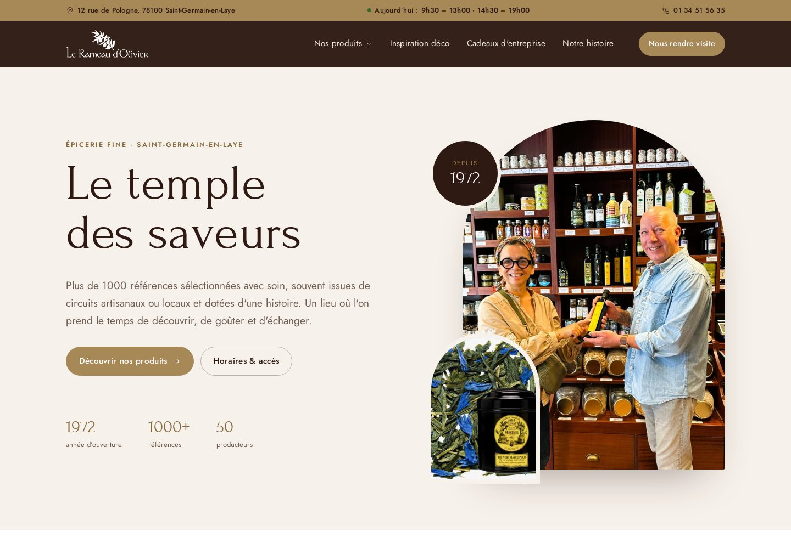
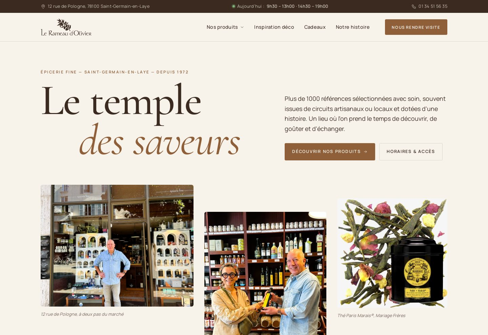
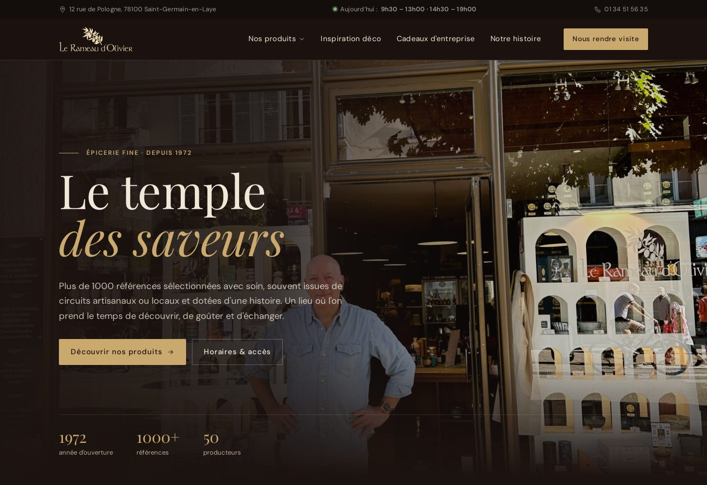
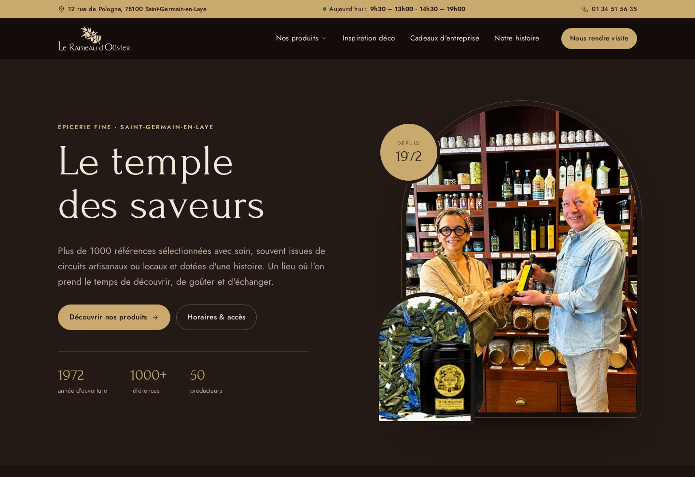
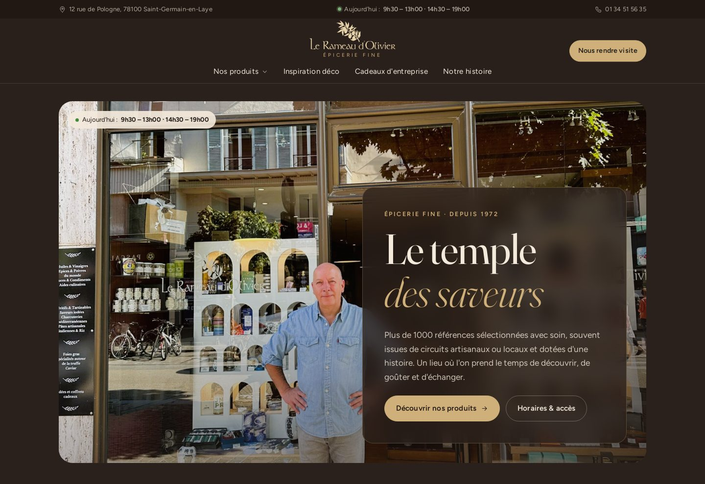
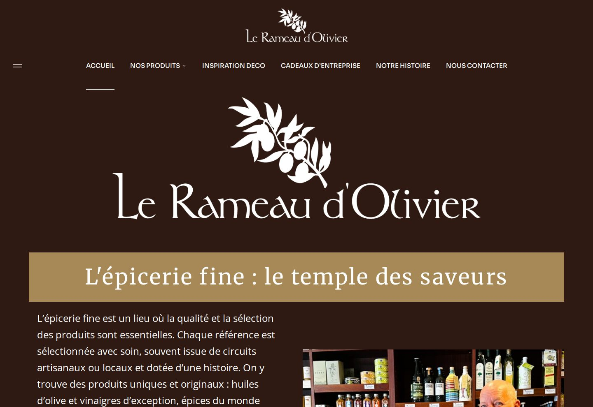

Proposition 1 Arcades Les couleurs actuelles du site (or, brun, chocolat), modernisées. Les arches des vitrines de la boutique deviennent le motif graphique du site. Forum (titres, police actuelle) · Jost (texte) Ouvrir la maquette →
Proposition 2 Lin & caramel Une version claire et lumineuse, esprit magazine : fond lin, caramel et cacao, grandes typographies élégantes et beaucoup d'air. Cormorant Garamond (titres) · Manrope (texte) Ouvrir la maquette →
Proposition 3 Nuit gourmande Une ambiance sombre et chaleureuse, couleur espresso et or, qui met en valeur les produits comme dans un écrin. Playfair Display (titres) · DM Sans (texte) Ouvrir la maquette →
Proposition 4 Nouveau Arcades de nuit La mise en page « Arcades » de la proposition 1 (arches des vitrines, police actuelle), habillée des couleurs sombres de la proposition 3 : espresso, or et crème. Forum (titres, police actuelle) · Jost (texte) Ouvrir la maquette →
Proposition 5 Nouveau Comptoir Un nouveau style, doux et contemporain : en-tête centré, grandes photos aux coins arrondis, rayons présentés comme une carte. Couleurs de la proposition 3, en un peu plus clair. Fraunces (titres) · Figtree (texte) Ouvrir la maquette →
Pour comparer Site actuel Le site tel qu'il est aujourd'hui, reproduit à l'identique ou presque (mêmes pages, textes, couleurs et polices) pour comparer chaque proposition avec l'existant, page par page. Forum (titres) · Merriweather · Open Sans (texte) · Sora (menu) Ouvrir la maquette →Ce qui change dans toutes les propositions
- Menu simplifié. « Accueil » disparaît (le logo y mène). « Nos produits » ouvre un grand menu illustré, regroupé en trois familles. « Nous contacter » devient un bouton « Nous rendre visite » toujours visible.
- Navigation plus fluide. Transitions douces entre les pages, en-tête fixe, rayons accessibles en un clic depuis chaque page produit, liens « rayon précédent / suivant », fil d'Ariane.
- Infos pratiques partout. Adresse, téléphone et horaires du jour affichés en haut de chaque page.
- Une vraie page « Nos produits » qui présente les neuf rayons.
- Mise en page plus aérée. Fini les gros blocs de couleur carrés : des cartes légères, des photos mises en valeur et plus d'espace.
Astuce : dans chaque maquette, la pastille en bas à gauche permet de passer d'une proposition à l'autre sur la même page.